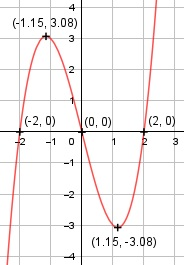

Aufgabe 19 f(x) = x3 - 4x f'(x) = 3x2 - 4, f''(x) = 6x, f'''(x) = 6 Definitionsbereich: -∞ < x < ∞ Wertebereich: -∞ < f(x) < ∞ Asymptoten: - Symmetrie: Nur ungerade Exponenten für x --> Punktsymmetrisch zum Koordinatenursprung Nullstellen: x3 - 4x = 0 x * (x2 - 2) = 0 x1 = 0 x2 - 4 = 0 |+4 x2 = 4 |ⱱ x2,3 = ± 2 N1(0|0), N2(2|0), N3(-2|0) Schnittpunkt mit der y-Achse: f(0) = 03 - 4 * 0 = Sy(0|0) Extrempunkte: 3x2 - 4 = 0 |+4 3x2 = 4 |:3 4 x2 = --- |ⱱ 3 x1,2 = ± 1,15, f(1,15) = 1,153 - 4 * 1,15 = -3,08 wegen Punktsymmetrie f(-1,15) = 3,08 f''(1,15) = 6 * 1,15 > 0 --> Tiefpunkt (-1,15|-3,08) f''(1,15) = 6 * -1,15 < 0 --> Hochpunkt (-1,15|3,08) Wendepunkte: 6x = 0 | :6 x = 0, f''')(x) ≠ 0 --> Wendepunkt (0|0) Graph:
